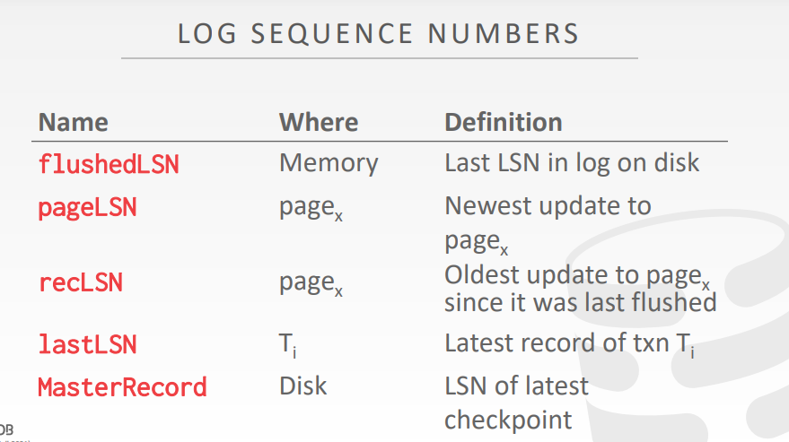

Crash Recovery
故障恢复算法是为了确保数据库一致性，事务的原子性和面对故障时数据的持久性的一种技术
故障恢复算法主要分为两部分：
第一部分：在正常的事务处理阶段添加一些操作，使得DBMS可以在故障发生时对数据进行恢复（防患于未然）
- 通过上一章的学习，发现添加的操作主要就是WAL
第二部分：在数据库故障发生时执行一些操作，以此维护数据库的原子性、一致性和持久性（利用上一个部分所添加的操作，维护DBMS的ACID特性；本章的重点）
Checkpoints
崩溃恢复时，可以直接从checkpoint的位置开始读取数据，而不用将所有的log都读取一遍
checkpoint会周期性执行
checkpoint会将内存中的数据（脏页）和日志全部都写入磁盘
然后，会在日志中会写入一个checkpoint的标志
Example

checkpoint之上的日志和数据页，都已经被写入磁盘中了
checkpoint之下的日志和数据页，还在内存中
此时发生了crash，便有如下分析过程：
事务T1的开始和结束都是在checkpoint之上的（表示其中的数据都写入了磁盘中），因此DBMS不需要对其进行恢复
事务T2的开始是在checkpoint之前，结束是在checkpoint之后（但是T2的commit的日志已经在磁盘上了，表明该事务已经提交了），因此，T2需要进行redo操作，将checkpoint到T2 commit之间的，属于T2的操作全部重现一次，从而实现事务的原子性
事务T3的开始是在checkpoint之前，但在磁盘上的log中没有发现T3 commit的日志，因此需要undo操作，将此前T3的相关操作全部都给回滚
ARIES
全称是Algorithms for Recovery and Isolation Exploiting Semantics
从字面的意思理解就是数据库恢复原型算法
这种算法的理念各大厂商都有去实现和遵守
但是工程细节上面又会有所不同，并且不同厂商也会有所创新
Main ideas
WAL：使用的是steal + no-force策略，数据页可以不立刻写入磁盘，但是日志页必须立即写入磁盘
Repeating History During Redo：在DBMS崩溃的时候，要使用WAL的日志对数据进行恢复
Logging Changes During Undo：日志中虽然记录了一些操作，但是直到DBMS崩溃的时候该事务还没有提交，那么这些执行了一半的事务，操作过的数据都需要撤销回滚

Log Sequence Numbers
背景：
需要给每一条日志一个单调递增的，全局的序列号
序列号的作用是表明系统当前运行的状态
flushedLSN
该LSN是存放在内存中
记录的是上一次刷到磁盘上的log的编号
换言之，现在有哪些日志是已经被写入到磁盘上了的
比如说，如果此时的LSN是100的话，就代表前100号日志都已经落到了磁盘上
而在100之后的日志就还没有写入到磁盘中，即还在内存中
pageLSN
该LSN是存放在数据页上的，每一个数据页都有一个pageLSN
记录的是最近一次，修改当前数据页的日志的编号（LSN）
也可以认为是当前数据页在内存中时，最新修改该page的日志的编号
recLSN
该LSN是存放在数据页上的，每一个数据页都有一个recLSN
记录的是，当前的page在上一次写入磁盘后，第一个对该page进行修改的日志编号（LSN）
可以理解为，比当前磁盘上的page还要新的第一个版本
或者说，记录的是内存中当前page最早的修改（在此前，更早的修改都已经落盘了）
因此，关于当前在内存中的page，recLSN到pageLSN之间的日志修改，都存储在了内存中
recLSN和pageLSN在内存中，对于当前page的修改的上限和下限
lastLSN
该LSN是针对单个事务的，每个事务都有一个lastLSN
记录的是，当前事务最后一条操作日志
MasterRecord
该MasterRecord是针对全体存储介质的，每个存储介质（例如磁盘）都有一个MasterRecord
记录的是上一次标记，带有checkpoint点的日志的LSN
Writing log records
始终遵守的一个原则：当一个脏页X被刷到磁盘的时候，必须要保证pageLSNX小于等于flushedLSN
这就意味着，写入脏页X的前提是与脏页有关的日志及当前日志之前的所有日志都得写入磁盘中
所以，如果我们想要将脏页X写入到磁盘中，至少需要将脏页X的pageLSNX前面，已经操作过的数据写入磁盘
然后才能将脏页X写入磁盘
每一个log都有其对应的LSN
每当事务修改page上的数据的时候，都要更新pageLSN
每一次将内存上的日志写入到磁盘时，都需要更新flushedLSN
Normal commit & Abort operations
Normal execution
事务的组成：对数据的读写操作、事务的开始标记、事务的commit以及abort
并且，对于事务的操作简化为以下模型：
- 所有的日志记录都保存在同一个page中
- 磁盘的写入都是原子操作
- 以SS2PL为背景，研究事务的恢复机制
- steal + no-force的方式管理缓冲池
Transaction commit
commit时需要执行的操作：
需要在log中添加commit的标记
要保证在commit的时候，当前事务的所有日志都要被写入到磁盘中
- 日志的写入磁盘的过程，是顺序IO、同步IO（IO线程会卡在IO的步骤，当IO完成了以后才会返回）
- 一个日志的文件中，含有多条日志
当事务真正提交的时候，会再添加一条TXN-END的日志
- 但这一条log并不需要立刻写入磁盘中
- 这条日志表示当前事务，所修改的数据都已经写入到磁盘中了
- 这条日志对于用户来说，是无感知的，用户是不知道这条日志的
也就是说，commit日志只代表操作的日志被写入了磁盘
而TXN-END日志才代表修改的数据被写入磁盘了
PS：当内存中的日志被flush到了磁盘中时，在内存中的日志就可以被删除了
Transaction abort
事务发生回滚是一种非常特殊的情况，因此ARIES算法需要进行一些额外的操作，以达到Undo的目的
在每一条日志的后面，加上prevLSN
记录在当前日志所在的事务中，上一个操作日志的LSN
因为LSN是所有的事务共同使用的，所以有可能当前LSN是15号，但14号LSN日志不是当前事务的日志，是其他事务的LSN
prevLSN是为了找到，在当前日志所在的事务中，前一条日志是多少号
这样在abort的时候就可以像一个链表一样将数据进行回滚
PS：事务开始的日志（即begin）的prevLSN是nil
Compensation log records
背景：可以利用prevLSN对事务的操作进行回滚，但是仍然需要用日志记录当前的事务是如何回滚的，因此引入CLR
定义：CLR是记录事务的数据是如何被回滚的日志（如何撤销此前更新的操作）
CLR日志包含了被回滚日志操作的所有字段，同时还有undoNext指针（记录下一步要回滚的日志LSN）
CLR日志也是被写入到日志文件中，但并不会被要求强制刷盘（因为本身DBMS就在回滚，所以即使此时的日志又发生了崩溃，下次恢复的时候在回滚即可）
Example
此时需要回滚T1事务，那么就要添加一条新的日志，即CLR-00x，00x表示需要撤销的操作的LSN（例子中需要回滚LSN为002的数据，因此这里是CLR-002）
这条日志的prevLSN就被设为011，因为这条撤销的日志依然属于这个事务
UndoNext就被设为001，因为此时回滚完002号日志后，就需要回滚002的上一条日志，即001
当回滚结束后，就需要添加TXN-END日志，表示该事务的回滚操作都结束了（此时的undoNext是nil）
PS：因此，TXN-END既可以表示事务正常运行的结束；也可以表示事务回滚过程后，事务的结束（即commit和abort）
Abort algorithm
回滚算法的具体操作：
首先，在日志中写下当前事务的abort log
接着，需要撤销当前事务对数据的修改
先加上一条清理日志（CLR）
然后再恢复旧版本的数据
最后，将事务的操作全都回滚了以后，再加上一条TXN-END的日志
PS：清理日志（CLR）是不需要被回滚的（清理日志本身就是用来回滚其他的日志的，所以不应该被回滚）
Fuzzy checkpointing
Non-Fuzzy Checkpoints
一般的checkpoint要生成一个一致性的快照，就需要执行以下操作：
- 任何新的事务都不可以开始
- 需要把正在运行的事务全部都做完
- 将内存上的脏页都写入磁盘
这种方式对于正在运行的DBMS不利
- 因为需要停下来专门处理checkpoint
- 并且，有些正在运行的事务可能需要非常久的时间才能做完，那么就需要非常久的等待，并且在这期间不能做其他事
但是对DBMS的恢复有利
Slightly Better Checkpoints
一个很自然的想法：不一定要等待所有正在执行的事务都结束后，再进行checkpoint
换个角度说，只要给内存中活跃事务的脏页加锁，让checkpoint机制无法将这类脏页写入磁盘
那么就不用等到所有的事务都结束后，再进行checkpoint了
而为了实现这种效果，需要维护以下两个表：
Active transaction table（ATT，记录当前活跃事务的列表）
Dirty page table（DPT，脏页表，记录当前系统中有哪些脏页）
Active transaction table
活动事务表：记录的是做checkpoint时，内存中活跃的事务
每条事务记录的组成：
- txnID（事务ID）
- txn status（事务的状态）
- R：running
- C：committing
- U：还没提交，可以理解为undo候选人，如果崩溃的时候，事务的状态依然是U，那么就要执行Undo操作了
- lastLSN（事务最近的一条操作日志）
只有当事务结束了（写入TXN-END）的时候，才可以把事务从当前的表中移除
Dirty page table
脏页表：记录的是内存中，还没有写入磁盘的脏页
表中的每一个脏页，都会记录recLSN
- recLSN是指第一次使得当前page变为脏页的日志，也就是自上一次刷盘后开始的第一个日志
Example

对于slightly better checkpoints来说，
会在每个checkpoint点的位置，额外的记录一下此时的ATT和DPT
Observation
slightly better checkpoint的做法，其实是让正在运行的事务先暂停
并给这些事务的脏页上锁，以此保证checkpoint的时候不会把这些没完成的脏页写入磁盘
换言之，相比原来的checkpoint方法
slightly better checkpoint的优点是不需要等到所有的事务全部做完
允许其留下还没执行完的活跃事务及其脏页
但是缺点是，尽管没有清空事务，但还是暂停了事务（失去了并发性）
思考：之所以造成checkpoint会有性能问题，是因为我们一直要求要有一个一致性的快照
要求此时（具体的某个时间点），所有的数据页都被刷入到了磁盘中
由此引发的一个思路就是，由具体某个时间点的快照，变为某个时间段的快照，即fuzzy checkpoints
Fuzzy checkpoints
主要思路：
将checkpoint的一致性快照，由时间点变为了时间段
那些还在活跃事务下的脏页，checkpoint就不需要对其进行强制刷盘
将checkpoint的时间点变为时间段，即分别写入checkpoint-begin、checkpoint-end两条日志
- checkpoint-begin表示checkpoint的开始
- checkpoint-end表示checkpoint的结束，同时附上ATT和DPT这两个表
- 对于ATT和DPT，这两个表都表示是在checkpoint-begin之前活跃的事务，和未刷入磁盘的脏页
- 而checkpoint-end则表示，记录在checkpoint-begin以前提交的事务的日志及数据都已经刷盘
- 在checkpoint-begin之后的，checkpoint-end之前的任何事务，都不会被记录到ATT中
ARIES - Recovery phases
Phase I：Analysis
数据库发生崩溃后，先读入WAL文件
找到MasterRecord（即上一次checkpoint的位置，如果是fuzzy checkpoint，那就是checkpoint-begin）
并对其上下的日志进行分析
Phase II：Redo
把应该写入到磁盘中，但是还没有写入磁盘的数据，对其进行恢复
Phase III：Undo
把应该回滚，但是还没有回滚的数据进行回滚

Overview
当DBMS发生崩溃之后，首先要找到上一次checkpoint的位置，也就是MasterRecord，也是last checkpoint
接着就需要去找哪些日志的操作需要redo，也就是要找DPT（脏页表）里面最小的recLSN
- 为什么要去脏页表里面找，因为此时脏页表里面的数据并没有写入到磁盘里面
- no-fuzzy checkpoint之前所有的日志和数据都已经写入到磁盘中了，但是这里使用的是fuzzy checkpoint，那么就会导致有部分脏页数据是还没有写入磁盘的（为了性能，使用了fuzzy checkpoint）
- 因此就要找对应脏页的recLSN，然后从这一点开始做数据的Redo操作
最后，就是Undo操作
- 从DBMS崩溃时的位置往前进行分析，分析有哪些事务到最后依然是活跃的，那么这些事务的操作就需要回滚

Analysis phase
首先先找到上一次checkpoint的位置，然后从这个位置往前扫描（即往最新的方向扫描；如果是fuzzy checkpoint，那么就要从checkpoint-begin的位置开始扫描）
如果发现了TXN-END的日志，就表明这个事务是已经完成了的，不需要对其进行redo或是undo的操作
就可以把这个事务从ADT（活跃事务表）中移除
对于接下来读到的每一条日志记录：
- 把当前记录的事务放到ADT中，并且标记为UNDO状态
- 如果找到了读到了某个事务的commit，就把该事务在ADT中的状态改为COMMIT状态
- 特别的，针对UPDATE的记录，就把发生了数据修改的page添加到DPT（脏页表）中，然后把该脏页的recLSN改为该日志的LSN
上述的分析阶段其实就是不断地构建ATT和DPT的过程：
- ATT记录的是在系统崩溃的时候，还有哪些事务是活跃的
- DPT记录的是在系统崩溃时，系统还没有写入到磁盘的脏页
Example

当DBMS发生了崩溃之后，就需要找到最近的checkpoint-begin点，分析从这个点到Crash的时候，中间的日志：
020号日志：先将该日志添加到ATT和DPT中，并将该事务的状态标记为U（因为此时还没有提交）；而在DPT中，就把脏页给记录下来
030号日志：发现是checkpoint-end，那么就把此时的ATT和DPT的数据覆盖到已有的ATT和DPT上
040号日志：发现是事务T96的commit日志，于是就可以把事务T96在ATT中的状态修改为C（commit）
050号日志：发现是事务T96的TXN-END日志，就代表与这个事务有关的操作全部都完成了，被刷入盘中，那么就可以把T96事务相关的数据和页从DPT和ATT中移除
Redo phase
Redo阶段的主要目的是重现DBMS在发生了崩溃时的状态
因此，需要Redo已经commit的事务记录，
需要Redo直到Crash时还依然没有提交的事务记录，
同时还要CLR（回滚清理日志）
一些优化的思路：对于那些未提交事务的操作记录，是不需要回滚（因为它们属于未提交事务）
但基本的ARIES是不这样做的，可能有些工程实践中有这些操作
Redo的具体流程：
针对DPT中的每一个页，都找到这个页的recLSN，然后从recLSN的日志位置开始对数据进行Redo操作，恢复至Crash发生时的状态
对于其中每一条日志记录或是CLR记录，都需要进行Redo操作，除了以下两个情况（即以下两种情况不需要Redo）：
- DPT中没有当前页（比如说发现一个日志修改了某一页的数据，但是脏页表DPT中没有这一页，那么就不需要Redo这条日志）
- 代表这个页早已经被写入到磁盘中了
- DPT有当前修改的页，但是当前日志的LSN小于这一页的recLSN
- 这代表着当前日志的修改，是在recLSN之前的，那么这个修改必然是已经被写入磁盘了的
Redo一条日志的具体流程：
- 将数据读入内存，在内存中重新执行一遍这条语句
- 把当前数据页的pageLSN修改为这条日志的LSN
- 在重新执行日志的操作中，是不需要额外写入日志的，也不强制将数据写入磁盘
最后，将ATT中所有的状态是C的事务，添加上TXN-END的日志，并把这个事务从ATT中移除
Undo phase
背景：一方面，Redo阶段可能会重做一些未提交事务的日志；另一方面，有些未提交事务的数据可能已经被写入磁盘中了
因此，需要在ADT中找到所有状态为U的事务（U代表事务未提交）
然后根据ADT中事务的lastLSN，对事务的操作一条一条的回滚（回滚过程中利用UndoNext来记录下一条需要回滚的日志）
PS：在Undo阶段，需要为每一个Undo操作的日志写入CLR（清理日志）
Full example
举个例子，利用ARIES算法对DBMS的崩溃进行一次分析：

首先是Analysis阶段，从Log中分析出此时的ATT和DPT

接着是Redo阶段，针对DPT中的数据脏页，将数据进行刷盘
比如说此时脏页有P1，那么就先将脏页P1从磁盘中读取到内存中，然后从recLSN的位置，直到Crash这个区间进行分析，将数据页按照log上的操作进行修改
PS：此时的Redo操作是没有日志的
最后是Undo阶段，对ATT中尚未提交的事务（状态是U的事务）操作进行回滚
事务的回滚便是利用每个事务的lastLSN，逐条逐条的往上回滚（事务的语句是利用UndoNext进行连接的）
比如这里需要回滚事务T2，那么就需要lastLSN对事务的操作进行回滚，同时UndoNext就会记录下一条需要回滚的日志操作

再比如说这里回滚事务T3，而T3只有一条语句，那么这里UndoNext就为空，并且在该事务回滚完毕后（即所有的与该事务的脏页都被写入了磁盘中），会再添加一条TXN-END的log

一个小插曲：如果在崩溃后的恢复过程中，又发生了一次崩溃，那么此时的恢复也是和之前是一样的（再次恢复的时候，重复ARIES的几个步骤即可）

Additional crash issues
问题一：如果DBMS在分析阶段又发生了崩溃，是否有问题？
答：没问题，下次恢复的时候再分析即可
问题二：如果DBMS在Redo阶段又发生了崩溃，是否有问题？
答：没问题，因为Redo阶段是不计入日志的，如果是在Redo的过程中崩溃了，那么此时的数据还是在内存上，并没有写入磁盘，所以没有影响；而如果说是在事务TXN-END之后发生崩溃了，也不会有问题，因为TXB-END日志写入就代表数据已经落盘了
问题三：在Redo阶段，有什么能够提高性能的方案？
答：在Redo的时候，同时在后台将数据异步刷盘
问题四：在Undo阶段，有什么能够提高性能的方案？
答：懒加载，即先不要立刻执行Undo操作；因为可能某个数据页一直都没有人访问，那么做不做Undo操作都不影响性能
所以可以选择当有新的事务要对其进行操作的时候，再对数据页进行Undo的操作（Lazily rollback）
好处就是能让DBMS快速的对外提供服务
但缺点就是会间接的影响后续事务的性能
另一方面，从应用的使用者的角度来说，尽量不要写太长的事务（这会导致Undo阶段非常的影响性能）
Conclusion
ARIES的几个实现细节：
需要使用WAL，
steal + no-force的策略需要使用
fuzzy checkpoints分析阶段过后，需要先进行Redo操作，再进行Undo操作
在Undo的时候需要写入CLR日志
LSN（日志序列号），在整个ARIES中都非常重要的概念
- 可以用LSN实现一个链表，利用prevLSN记录一整个日志的所有日志操作
- 也可以利用pageLSN，做数据页和日志记录的比较
Thinking
使用WAL的主要目的应该不是为了提高性能（虽然顺序IO是快于随机IO的，但是写了日志后，还是要执行语句，还是要随机IO）
而是为了在崩溃恢复的时候，确保DBMS依旧能够保证提供ACID的特性